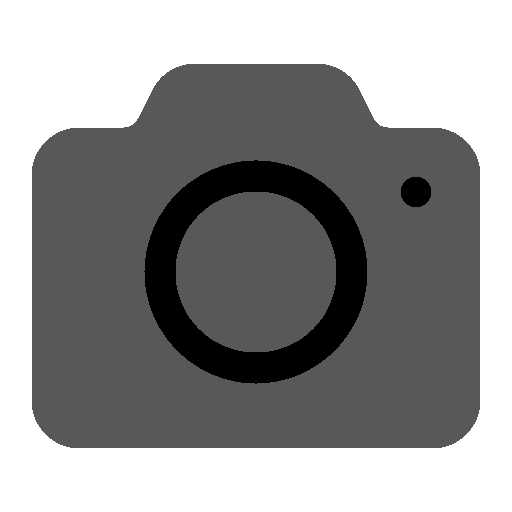

16.44
Sabtu, 19 Juli
Tekan tombol utama - buka kunci
●

✕
Ganti Background
Atur Menit Mundur
Simpan & Tutup
let extraMinutes = 0; let fakeOffset = 0; // jumlah menit dimajukan let isRewinding = false; // Tombol "Simpan & Tutup" document.getElementById('apply-time-travel').addEventListener('click', () => { const inputMinutes = parseInt(document.getElementById('extra-minutes').value, 10); if (!isNaN(inputMinutes) && inputMinutes > 0) { extraMinutes = inputMinutes; fakeOffset = extraMinutes; isRewinding = false; // ❗ JANGAN langsung rewind } document.getElementById('setting-layer').style.display = 'none'; }); // Fungsi update tampilan waktu di layar function updateTimeDisplay(dateObj) { const jam = dateObj.getHours().toString().padStart(2, '0'); const menit = dateObj.getMinutes().toString().padStart(2, '0'); document.getElementById('time').textContent = `${jam}.${menit}`; const hari = ['Minggu', 'Senin', 'Selasa', 'Rabu', 'Kamis', 'Jumat', 'Sabtu']; const bulan = [ 'Januari', 'Februari', 'Maret', 'April', 'Mei', 'Juni', 'Juli', 'Agustus', 'September', 'Oktober', 'November', 'Desember' ]; const tanggal = dateObj.getDate(); const hariIni = hari[dateObj.getDay()]; const bulanIni = bulan[dateObj.getMonth()]; document.getElementById('date').textContent = `${hariIni}, ${tanggal} ${bulanIni}`; } // Fungsi utama update waktu function updateTime() { const now = new Date(); let displayTime = new Date(now.getTime() + fakeOffset * 60000); if (isRewinding && fakeOffset > 0) { fakeOffset -= 0.3; // rewind cepat: 0.3 menit = 18 detik setiap 300ms if (fakeOffset <= 0) { fakeOffset = 0; isRewinding = false; } displayTime = new Date(now.getTime() + fakeOffset * 60000); } updateTimeDisplay(displayTime); } // Jalankan update waktu setiap 300ms agar rewind halus setInterval(updateTime, 300); // Ketuk layar untuk mulai rewind document.body.addEventListener('click', () => { if (fakeOffset > 0 && !isRewinding) { isRewinding = true; } }); // Gesture dua jari tarik ke bawah untuk membuka pengaturan let startY = null; document.addEventListener('touchstart', function (e) { if (e.touches.length === 2) { startY = Math.min(e.touches[0].clientY, e.touches[1].clientY); } }); document.addEventListener('touchmove', function (e) { if (e.touches.length === 2 && startY !== null) { const currentY = Math.min(e.touches[0].clientY, e.touches[1].clientY); if (currentY - startY > 80) { document.getElementById('setting-layer').style.display = 'flex'; startY = null; } } });